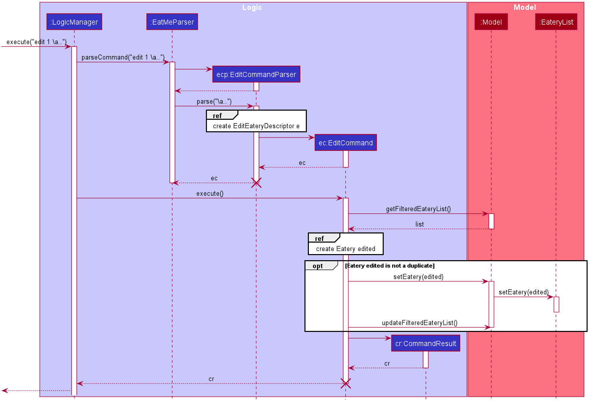
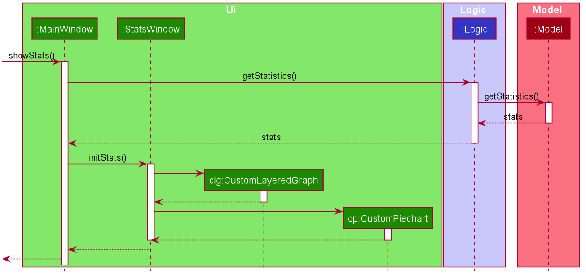

Overview
This portfolio documents all contributions I have made as part of the team project in the CS2103T Software Engineering module. For the software engineering team project, my group of 4 other software engineering students and I were tasked with enhancing an existing application called Address Book 3. We chose to morph the current application into a food diary application called EatMe. The user interacts with it using a Command Line Interface (CLI) and it has a Graphical User Interface (GUI) created with JavaFX. It is written in Java and has about 10 kLoC.
Summary of Contributions
My main task was to implement the stats, add and edit features. The following sections illustrate the work I had carried out to implement the feature, as well as the relevant documentation I have added to the user and developer guides.
Features implemented
Add command
The add command allows the user to add an eatery to our food diary application. The user can specify the name, address, category, and tags for the eatery when adding the eatery. Being a food diary application, the add command is one of the most important commands in the application as without it, the user would not be able to manage and keep track of any food places. The add command already came with the original Address Book code. Hence, all I needed to do was to add a Category field into the add command argument parameters and making the Tag field in the original add command argument parameters optional.
Edit command
The edit command allows the user to edit an existing eatery. To edit an existing eatery, the user would need to specify the index of the eatery and other parameters that they would like to modify. Similarly, the edit command is one more important command in the application as there is a possibility that the user might have entered the eatery information wrongly. The edit command also came with the original Address Book code. Hence, all I needed to do was to enable the user to edit the Category field in the existing eatery.
Stats command
The stats command allows the user to generate statistics about the eateries they have visited and the reviews they have made at those visited eateries. The stats command is not one of the most crucial commands in the application, however, it is still useful for users as it gives them a breakdown of their eateries and reviews. Unlike the add and edit commands, stats command did not come with the original Address Book 3 code. Hence, it required an in-depth analysis of possible design solutions and alternatives.
Other contributions
-
Documentation
-
Made improvements to the EatMe user guide so that it reflects the actual functionality of our application. Do refer to pull request [#9] and [#182], specifically commits [d8da7b] and [b3242a] for more details.
-
Made changes to the general class diagrams shown in the "Architecture" section of the EatMe developer guide so that it reflects the actual architecture of our application. Do refer to pull request [#170] for more details.
-
-
Community
-
Design
-
Designed and created the high-fidelity mock-up of how our food diary application should look like originally and the icon for the application.
-
Contributions to the User Guide
Shown below are some of the sections I contributed to the User Guide. They showcase my ability to write documentation targeting end-users.
Adding an eatery: add
Adds an eatery to the app.
Format: add \n [name of eatery] \a [address] \c [category] {\t [tags]…}
Examples:
-
add \n Two Chefs Eating Place \a 116 Commonwealth Cres, #01-129 \c Chinese -
add \n Two Chefs Eating Place \a 116 Commonwealth Cres, #01-129 \c Chinese \t good-for-groups \t non-aircon
Showing overall statistics: stats
Presents a visual overview of the user’s eateries and reviews. Eatery and review data used to generate the statistics are collated from the start of the application. The command will generate six types of statistics: most visited eateries, least visited eateries, eateries you spent the most at (on average), eateries you spent the least at (on average), price per category, number of visits per category.
Format: stats
Contributions to the Developer Guide
Shown below are some of the sections I contributed to the Developer Guide. They showcase my ability to write technical documentation and the technical depth of my contributions to the project.
UI component

API : Ui.java
The UI consists of a MainWindow that is made up of parts e.g.CommandBox, ResultDisplay, EateryListPanel, StatusBarFooter etc. All these, including the MainWindow, inherit from the abstract UiPart class.
The UI component uses JavaFx UI framework. The layout of these UI parts are defined in matching .fxml files that are in the src/main/resources/view folder. For example, the layout of the MainWindow is specified in MainWindow.fxml
The UI component,
-
Executes user commands using the
Logiccomponent. -
Listens for changes to
Modeldata so that the UI can be updated with the modified data.
Logic component
API :
Logic.java
-
Logicuses theEatMeParserclass to parse the user command. -
This results in a
Commandobject which is executed by theLogicManager. -
The command execution can affect the
Model(e.g. adding anEatery). -
The result of the command execution is encapsulated as a
CommandResultobject which is passed back to theUi. -
In addition, the
CommandResultobject can also instruct theUito perform certain actions, such as displaying help to the user.
Model component

API : Model.java
The Model,
-
stores a
UserPrefobject that represents the user’s preferences. -
stores a
EateryListobject that represents the data from the list of eateries in the app. -
stores the
FeedListobject that represents the data from the list of feeds in the app. -
exposes an unmodifiable
ObservableList<Eatery>that can be 'observed' e.g. the UI can be bound to this list so that the UI automatically updates when the data in the list change. -
exposes an unmodifiable
ObservableList<FeedPost>that can be 'observed' e.g. the UI can be bound to this list so that the UI automatically updates when the data in the list change. -
does not depend on any of the other three components.
Storage component
API : Storage.java
The Storage component,
-
can save
UserPrefobjects in json format and read it back. -
can save
EateryListobjects in json format and read it back. -
can save
FeedListobjects in json format and read it back.
Edit Eatery feature
Implementation
The edit feature allows the user to edit any fields from the selected eatery i.e. Name, Address, Category, and Tag field(s). This feature would replace existing Name, Address, Category, and Tag associated with the eatery, with the new ones inputted by the user. Hence, this feature is not advised for users who wants to add more tags to the current list of tags. The edit mechanism is facilitated by EateryList. It implements the following operations:
-
EateryList#setEatery()— Replaces an eatery with another eatery in theEateryList.
These operations are exposed in the Model interface as Model#setEatery().
Given below is an example usage scenario and how the add mechanism behaves at each step.
Step 1. The user launches the application for the first time. The EateryList will be initialized with the initial json data stored.
Step 2. The user executes edit 1 \a 116 Commonwealth Cres, #01-140 to edit the address of an existing eatery. Before executing the command, the command would need to be parsed first. Hence, the EatMeParser would create EditCommandParser.
Step 3. EditCommandParser creates EditEateryDescriptor using the parameters specified (i.e. address, in this scenario).
Step 4. EditCommandParser returns a new EditCommand with the newly created EditEateryDescriptor as a parameter.
Step 5. EditCommand creates a new Eatery using the existing Eatery to be edited and EditEateryDescriptor.
Step 6. If the newly created Eatery is not a duplicate of the existing Eatery, EditCommand calls Model#hasEatery to check if the eatery exists in the list. If the eatery is a duplicate or it exists in the list, EditCommand will throw a CommandException specifying that there’s already a duplicate eatery in EateryList. Else, EditCommand will call Model#setEatery to modify the eatery.
Step 7. After successfully editing the eatery, EditCommand will return the CommandResult to the Ui.
The following sequence diagram shows how the edit eatery feature is executed.

The following sequence diagram shows the reference sequence diagram for creating an EditEateryDescriptor e.

The reference sequence diagram for creating Eatery edited has been omitted as the steps are the same as the reference sequence diagram for add command above.
Design Considerations
Aspect: Replace or directly manipulating the eatery’s list of tags
-
Alternative 1 (current choice): Replace the entire list of tags
-
Pros:
-
Easy to implement.
-
More user-friendly — command makes more sense to the user.
-
-
Cons: Need to create additional commands to handle explicit manipulation of tags (i.e.
addtagandremovetagcommands to the current list of tags.
-
-
Alternative 2: Manipulating to the list of tags
-
Pros:
-
Easy to implement.
-
Don’t need to create an additional commands to manipulate tags.
-
-
Cons: Not as user-friendly — might need to specify more argument parameters to handle manipulation of tags (e.g.
\at [tags]to add tags and\rt [tags]to remove existing tags).
-
Statistics feature
Implementation
The stats feature allows the user to generate statistics about the eateries they have visited and reviews they have made at those visited eateries.
Given below is an example usage scenario and how the stats mechanism behaves at each step.
Step 1. The user launches the application for the first time. The EateryList will be initialised with the initial or previous json data stored.
Step 2. The user executes stats to generate statistics for the current application state. The EatMeParser would return a StatsCommand to execute the command.
Step 3. StatsCommand then creates Statistics to generate the different types of statistics needed. To create the different types of statistics, Statistics would, first, sort the eateries in EateryList based on different conditions i.e. categories, total expense, total number of visits. After sorting the eateries, Statistics would then use these sorted lists to generate the appropriate statistics.
If the user executes the stats command in the Todo mode, StatsCommand would throw a CommandException to the user specifying that the user is in the wrong mode. In addition, if there is no eateries with any reviews in the application at the time of stats execution, the StatsCommand would throw a CommandException error saying that there is no data to generate statistics. Lastly, if there is any error during the generating of statistics, the StatsCommand will throw another CommandException saying that there is an unknown error and the application is unable to generate statistics.
|
Step 4. StatsCommand would then call Model#setStatistics() with Statistics as a a parameter.
Step 5. After successfully generating the statistics, StatsCommand will return the CommandResult to the Ui.
The following sequence diagram shows how the statistics feature is executed.

Since the statistic feature has a different user interface compared to the other commands i.e. AddCommand, AddTagCommand, etc., it would be useful to explain how the different user interface components work.
Step 1. When the Ui receives the CommandResult from StatsCommand, the Ui will call MainWindow#showStats().
Step 2. MainWindow#showStats() will check if `StatsWindow is already open. If it is opened, it will call StatsWindow#initStats() and focuses the window. Else, it will call StatsWindow#initStats() and displays the window.
Step 3. In StatsWindow#initStats(), StatsWindow will create a CustomLayeredGraph and CustomPiechart to create the graph and pie chart needed for the statistics report.
The following sequence diagram shows how the statistics feature shows the statistics to the user. 
Design Considerations
Aspect: Whether the statistics should auto-update when an eatery is added or a review is added to an eatery.
-
Alternative 1 (current choice): Not making the statistics auto-update
-
Pros: Easy to implement; don’t need to refactor existing code to make use of ObservableList and add ListChange listeners.
-
Cons: User would need to call
statscommand after every addition or change made to the eatery or reviews of an eatery.
-
-
Alternative 2: Making the statistics auto-update
-
Pros: User would not need to call
statscommand after every addition or change made to the eatery or reviews of an eatery. -
Cons: Need to refactor a lot of existing code.
-
More detailed explanation for choosing alternative 1: Although it may be annoying for the user to keep calling stats command after every change made, we realise that since stats acts as a statistics report for the users, users may not call the stats command as often to justify refactoring the entire code. Furthermore, to make a change to the eatery or reviews, the user would still need to minimize StatsWindow and unminimize it to view the auto-updated changes. Hence, the number of steps the user would need to execute to see the change in statistics is the same even for both auto-update and without auto-update.